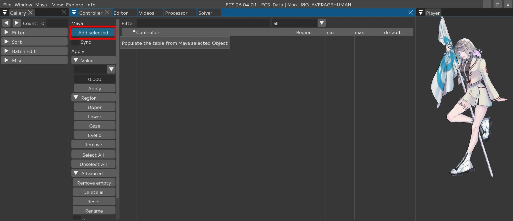
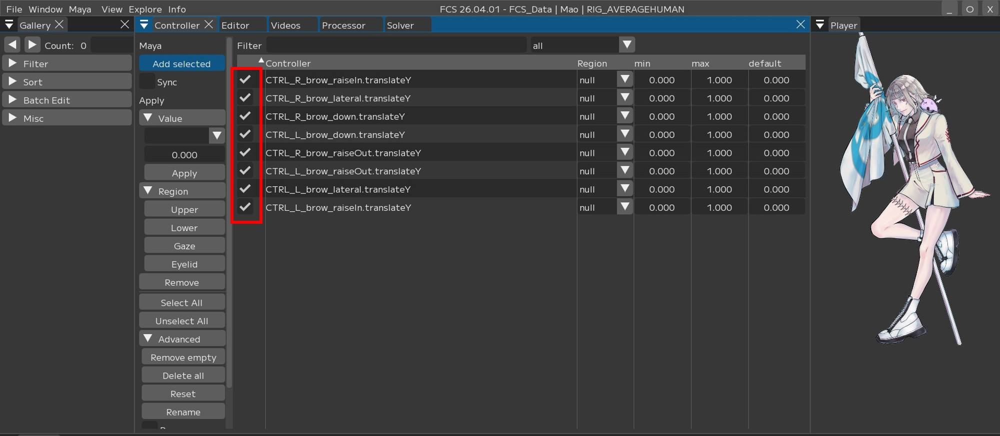
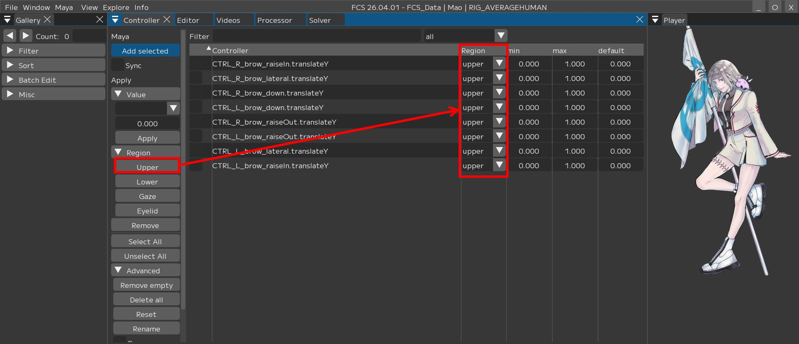
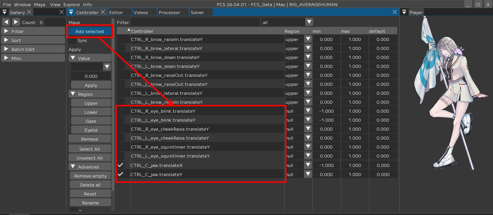
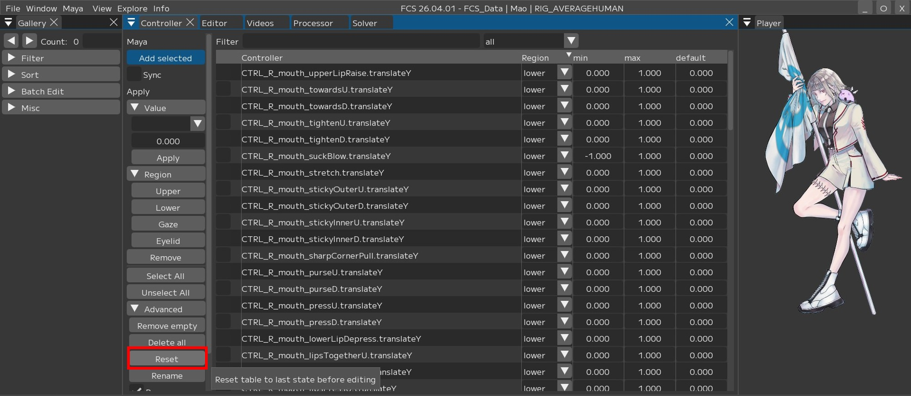

Contorollerの登録
Contollerウィンドウでは、接続しているMayaSceneのコントローラーリグを登録することができます。
|
Window→Controllerで |

Note
Contollerウィンドウについての説明はユーザーガイド/Menu/Window/Contollersをご覧ください。
Region（リージョン）とは
FCSでは顔のパーツ区分のことをRegionと呼びます。
Note
Upper（アッパー）：眉周りの動きのこと 眉の上下や眉間にしわを寄せる動きなど
Eyelid（アイリッド）：まぶたの動きのこと まばたきや目を細める動きなど
Gaze（ゲイズ）：目線の動きのこと 目線の上下左右や寄り目の動きなど
Lower（ロウワー）：鼻、頬、口周りの動きのこと 頬や鼻から下の動き全般
アニメーション解析のため、Upper、Eyelid、Gaze、Lowerにそれぞれコントローラーリグを１つ以上登録してください。
また、コントローラーリグの登録時にコントローラーの最大値最小値も登録できます。
最大値最小値は自動で入力されますが、値があまりにも大きすぎる場合は調整を行って下さい。

Warning
「True/False」などの数値ではないアトリビュートがあると正常に動作しないため、登録から除外してください。
Controllerの登録
Upperの登録を例にcontrollerの登録方法を説明します。
MayaでUpperに登録したいコントローラーを選択し、

2.【Add selected】ボタンを押します。
{kind=link}

Mayaで選択したコントローラーが「Controller」に表示されたら、
チェックボックスや【select All】（=全選択）でUpperに登録したいコントローラーを選択します。
{kind=link}

今回はUpperに登録したいので 【Upper】を押します。
Regionの列にUpperと表示されたら設定完了です。
{kind=link}

同じ手順で他のRegion（Eyelid/Gaze/lower）も設定してください。
連続して登録する場合
Mayaでコントローラーを選択して【Add selected】を実行すると、 選択したコントローラーが「Controller」に追加され、自動的にチェックが入ります。

この状態で【Upper】を押すと今までチェックが入っていたコントローラーのチェックが外れ、RegionがUpperに変更されます。
そのまま別のコントローラーを選択して【Add selected】した例が下図です。

新しく【Add selected】したコントローラーのみにチェックが入っています。
このように、連続して登録する際は追加されたコントローラーに対して自動でチェックが反映されるようになっています。
このとき、Regionを設定せずに新しく【Add selected】した場合にも、今までチェックが入っていたコントローラーのチェックが外れ、新しく追加したコントローラーのみにチェックが入る仕様となっています。
{kind=link}

Regionが未登録状態(null)のものがあるとSaveできません。
controllerウィンドウでは、Regionの種類や登録の有無でフィルターをかけ表示を絞り込むことができます。
フィルターを『null』にすることで、Regionが設定されてないcontrollerのみを表示できます。
右上のall▼のタブを選択し、null▼に変更する
Regionを設定したものを非表示にし、未登録のコントローラーのみ表示させることができます。
また、Upper/Eyelid/Gaze/Lowerを選択すればそれぞれ登録したRegionで絞り込むこともできます。

Note
【select All】は表示されているもののみ選択します。
また、【Unselect All】で選択解除が可能です。
nullで絞り込んでいるのでこの状態でRegionを登録すると非表示になります。
allに戻すとすべて表示されます。
〇all選択時

〇null選択時

登録しないコントローラーを削除する方法
1.コントローラー単体で削除する場合
削除したいコントローラーを選択(☑) → 【Remove】を押します。

2.nullのコントローラーを一括で削除する場合
【Remove empty】を押します。

Upper/Eyelid/Gaze/Lowerをすべて登録し終えたら 【Save】してください。

Warning
Regionが未登録状態(null)のものがあるとSave出来ません
マニュアル以外のコントローラーを登録したい場合
本マニュアルでは、UnrealEngineのMetahumanを使用していますが、別の3DCG作成ソフトで作成したものでも、各部位に連携できるコントローラーリグがあれば対応可能です。
また、必要最低限のコントローラーのみを登録していますので、任意で登録するコントローラーを増やすことができます。
Add selectでコントローラーの追加ができない場合
設定したMayaバージョンとsceneを作成したMayaバージョンが一致しているか確認してください。
Warning
設定したバージョンとsceneを作成したMayaバージョンが違うとコントローラーを読み取れません。
コントローラーの登録順を変えたい場合
例：L/R blinkが離れていて不便なのでblinkを上下（隣接するよう）に並べたい場合
【▶Advanced】 → 【Rearrange】に☑を入れ、
並び替えたいコントローラーをドラッグしドロップすると、順番を変更できます。

コントローラーの登録順を戻したい場合
【▶Advanced】 → 【Reset】を押すと、前回【Save】した時点での順番に戻ります。
{kind=link}

作業しやすいように登録順を並び替えたら必ず【Save】してください。